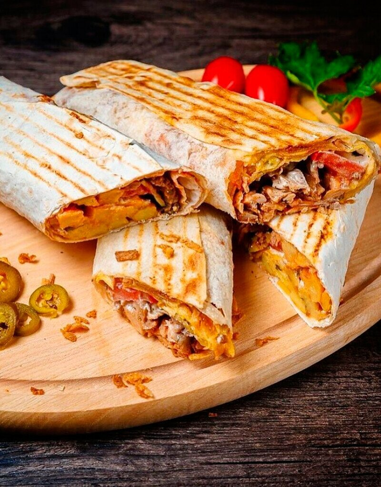

Doner Kebab Recipe
Ingredients:
- Flatbread or pita
- 500 g of meat (beef, lamb, chicken, or pork)
- Salt and pepper to taste
- 1 tsp paprika
- 1 tsp ground coriander
- 1 tsp ground cumin
- 2 cloves of garlic, finely chopped
- 1 onion, finely chopped
- 2 tbsp yogurt
- Olive oil
For serving:
- Sliced vegetables (tomatoes, cucumbers, onions, cabbage)
- Sauce (commonly tahini, yogurt, or garlic sauce)
Method:
- Marinating the meat: In a bowl, mix salt, pepper, paprika, coriander, cumin, garlic, onion, and yogurt. Add a bit of olive oil. Cut the meat into thin strips and add to the marinade. Stir to ensure the meat is fully coated. Leave to marinate for several hours, preferably overnight in the refrigerator.
- Cooking the meat: Heat a pan or grill over medium heat. Place the meat and cook until done, turning occasionally to ensure even cooking on all sides.
- Preparing the flatbread or pita: Slightly warm the flatbread or pita in a pan or microwave to make them softer and more pliable.
- Assembling the doner kebab: Place a layer of cooked meat on the flatbread or pita. Add the sliced vegetables on top. Dress with sauce to taste. Wrap the flatbread or close the pita to keep the contents from falling out.